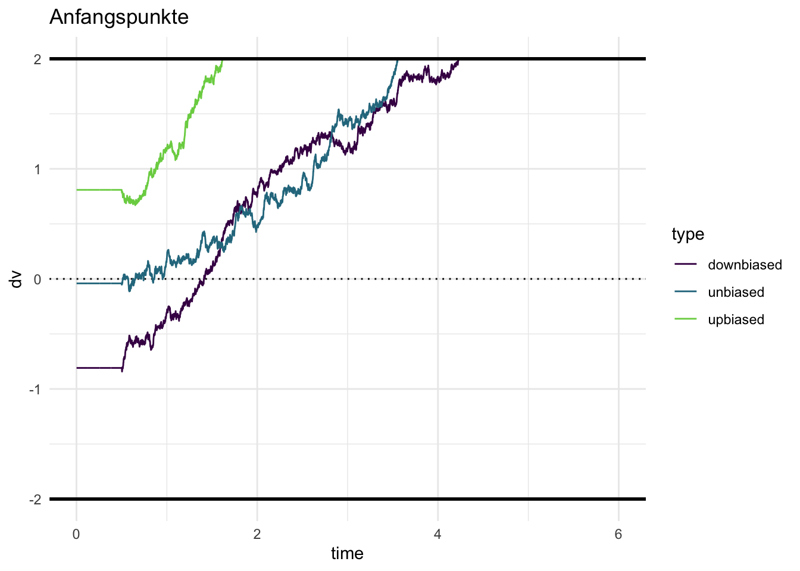
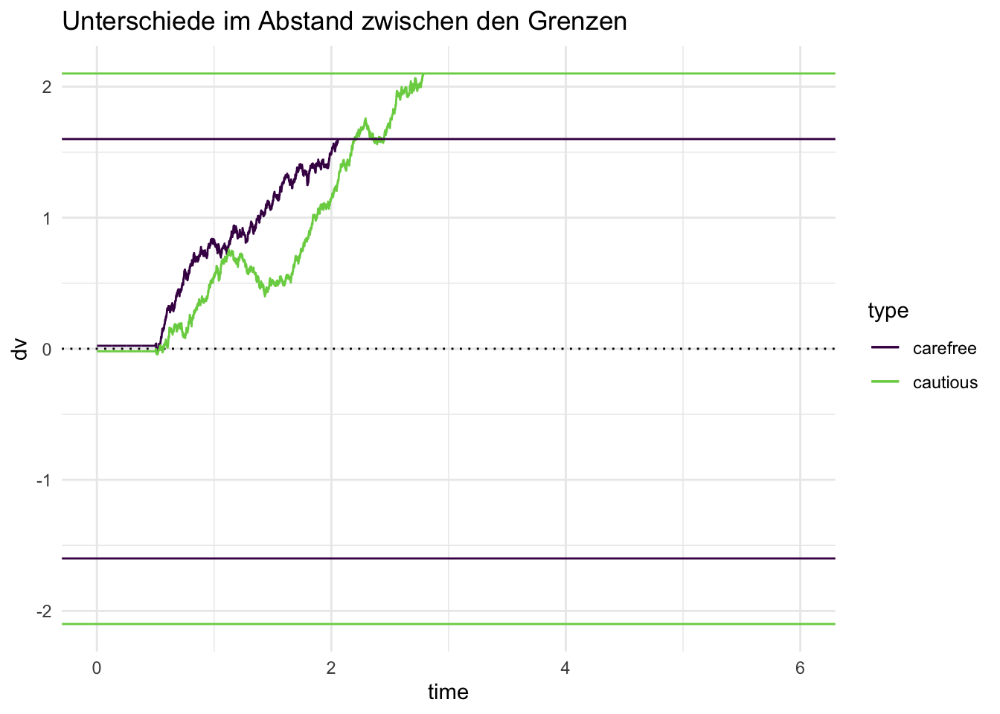

flowchart TD %%c((Condition)):::A --> r s((%-Correct)):::A --> r((resp)):::B classDef A fill:#ffffff, r:45px classDef B fill:#e5e4e4, r:45px
Drift Diffusion Modell
Daniel Fitze ![]()
Andrew Ellis
Gerda Wyssen
Modelle Rückblick
Wir haben zwei mögliche Modelle (vgl. DAG’s unten) angeschaut, welche die Leistung der Versuchspersonen im Random Dot Task beschreiben / vorhersagen können. Beide Modelle machen, basierend auf den Antworten, eine Aussage über die Sensitivität der Versuchspersonen. Für beide Modelle, die wir bis jetzt betrachtet haben, notieren wir die Antwort der Versuchsperson (links oder rechts) in jedem Trial des Random Dot Experiments. Basierend auf diesen Daten kann die Sensitivität (%-Correct, d') geschätzt werden.
flowchart TD %%c((Condition)):::A --> r c((c)):::A --> r s((d')):::A --> r((resp)):::B classDef A fill:#ffffff, r:30px classDef B fill:#e5e4e4, r:30px
Evidenz Akkumulation
Neben der Antwort der Versuchspersonen (links, rechts) haben wir auch die Zeit (rt) gemessen, welche benötigt wurde um diese Antworten zu geben. Diese Information wurde in den vorherigen Modellen nicht berücksichtigt.
Jetzt schauen wir uns genauer an, wie sich eine Entscheidung innerhalb eines Trials entwickelt und simulieren diesen Prozess in R. Dazu nehmen wir an, dass die Zeit in ganz kleine Schritte \(\Delta_t\) unterteilt ist (diskrete Zeit). Ausserdem gehen wir davon aus, dass die Person den Stimulus verarbeitet und über die Zeit Evidenz akkumuliert (sequential sampling). Diese Evidenz wird in einer Decision Variable gesammelt.
Wir modellieren die aktuelle Decision Variable zu Zeitpunkt \(t\) als normalverteilte Zufallszahl, bei der die driftrate den Mittelwert der Evidenz repräsentiert, und sd die Standardabweichung.
driftrate = 0.5
sd = 0.1evidence = rnorm(n = 1, mean = driftrate, sd = sd)
evidence[1] 0.6254446Dies bedeutet, dass zum Zeitpunkt \(t\) die Evidenz ungefähr 0.63 beträgt. Da die Evidenz die durchschnittliche Steigung repräsentiert, wird Evidenz \(>0\) dazu führen, dass ein Schritt in Richtung der oberen Grenze gemacht wird. Wäre die Evidenz negativ, wird ein Schritt nach unten gemacht. Da die Evidenz aus einer Normalverteilung gezogen wird, ist es also möglich, dass die Evidenz zufällig negativ wird, obwohl die drift rate, d.h. die Repräsentation der Stimulusstärke, positiv ist.
Note
Es wird angenommen, dass dieser Aspekt einigermassen gut die Vorgänge im Gehirn abbildet, da die neuronalen Antworten auf einen Reiz variabel sind (dies bedeutet, dass Neurone immer unterschiedlich auf einen Reiz reagieren, auch wenn dieser gleich bleibt).
Wenn wir dieses Prozess nun über einen Zeitraum wiederholen, und die evidence Werte aufsummieren, erhalten wir die decision variable. Diese sieht aus wie ein random walk mit einem Drift in die Richtung der durchschnittlichen Evidenz.
Random walk simulieren
Ein random walk ist das Resultat der Aufsummierung von Zufallszahlen. Wir können das in R selbst ausprobieren. Dazu simulieren wir einen random walk mit 100 Zeitschritten. Wir beginnen bei \(0\), ziehen 99 normalverteilte Zufallszahlen und berechnen die kumulierte Summe.
set.seed(546)
# hier z.B> standardnormalverteilte Zahlen
zufallszahlen_1 = c(0, rnorm(99, 0, 1))
random_walk_1 = cumsum(zufallszahlen_1)
plot(1:100, random_walk_1, type = "s", col = "#7fc97f",
ylim=c(-10,30), lwd = 2,
xlab = "Zeit", ylab="Random Walk")
Dieser random walk hat keinen Trend, weil wir immer aus einer Normalverteilung mit Mittelwert \(\mu=0\) ziehen. Wenn wir stattdessen aus einer Verteilung mit \(\mu=0.1\) ziehen, erhalten wir einen positiven Trend.
zufallszahlen_2 = c(0, rnorm(99, 0.3, 1))
random_walk_2 = cumsum(zufallszahlen_2)
plot(1:100, random_walk_1, type = "s", col = "#7fc97f",
ylim=c(-10,30), lwd = 2,
xlab = "Zeit", ylab="Random Walk")
lines(1:100, random_walk_2, pch = 18, col = "#beaed4",
type = "s", lwd = 2)
legend("topleft", legend=c("Ohne Trend", "Mit Trend"),
col=c("#7fc97f", "#beaed4"), lty = c(1, 1))Evidenzakkumulierung
Die Evidenzakkumulierung wird analog modelliert. Wenn wir explizit die Zeitschritte als Iterationen aufschreiben, können wir dies in R mit einer for Loop machen.
driftrate = 0.5
sd = 0.1
n_steps = 10
evidence = rep(NA, n_steps)
dv = rep(NA, n_steps)
time_steps = 1:n_steps
# Wir ziehen den ersten Wert aus der Verteilung
evidence[1] = rnorm(1, mean = driftrate, sd = sd)
dv[1] = evidence[1]
# für jeden weitern Zeitpunkt ziehen wir wieder eine Zufallszahl und addieren zur kumulierten DV
for (t in 2:n_steps) {
evidence[t] = rnorm(1, mean = driftrate, sd = sd)
dv[t] = dv[t-1] + evidence[t]
}tibble(time_steps, evidence, dv) |>
pivot_longer(c(evidence, dv), names_to = "type", values_to = "value") |>
ggplot(aes(time_steps, value, linetype = type, color = type)) +
geom_line() +
geom_point(size = 4) +
scale_color_viridis_d(begin = 0.2, end = 0.5)Die Decision Variable dv repräsentiert nun die kumulierten Evidenz, aufgrund dessen das Gehirn eine Entscheiung treffen kann. Wenn die Decision Variable entweder grösser als die ober Grenze ist, oder kleiner als die untere Grenze, wird die Evidenzakkumulierung abgebrochen, und eine Antwort wird ausgelöst. Wir können nun noch die “non-decision time” hinzufügen, und den Anfangspunkt der Evidenzakkumulierung. Dieser Anfangspunkt ist ein sehr wichtiger Parameter, denn wenn der Anfagnspunkt nicht genau in der Mitte zwischen den beiden Grenzen liegt, dann braucht es natürlich weniger Evindenz, um die Grenze zu erreichen, welche näher beim Anfangspunkt liegt.
| Parameter | Bedeutung | Anwendung |
|---|---|---|
| drift rate | Qualität der Evidenz pro Zeiteinheit | Task Schwierigkeit, Fähigkeit |
| bias | Anfangspunkt der Evidenzakkumulierung | A priori Präferenz für eine der beiden Alternativen |
| boundary separation | Vorsicht (caution) | Speed-Accuracy Trade-off |
| non-decision time | Verzögerung | Periphere Prozesse |
drift_diffusion = function(bias = 0.5,
driftrate = 0.8,
decision_boundary = 2,
ndt = 0.5,
diffvar = 0.1,
dt = 0.001,
max_time = 6) {
assertthat::assert_that(diffvar > 0)
# rescale bias so that 0.5 lies halfway between upper and lower bound
bias = as.numeric(2 * decision_boundary * bias - decision_boundary)
# initialize time_steps and dv
time_steps = max_time/dt
dv = array(dim = time_steps)
# start acumulating from bias (starting point)
dv[1] = rnorm(1, mean = bias, sd = sqrt(dt))
for (j in 2:time_steps) {
# non-decision time
if (j <= ndt/dt) {
dv[j] = dv[j-1]
}
else {
error = rnorm(1, 0, sqrt(diffvar * dt))
dv[j] = dv[j-1] + driftrate * dt + error # Cobb & Zacks (1985), Eq. 1.14
if (abs(dv[j]) > decision_boundary) {
dv[j] = dplyr::if_else(dv[j] > 0,
min(dv[j], decision_boundary),
max(dv[j], -decision_boundary))
break()
}
}
}
d = dplyr::tibble(time = round(seq_along(dv) * dt, 3),
dv = dv,
steps = seq_along(dv),
driftrate = driftrate,
decision_boundary = decision_boundary,
bias = bias,
ndt = ndt)
return(d)
}Auswirkungen der Parameter
Wir können nun einige Trials plotten, um den Effekt dieser Parameter zu visualisieren.
Drift rate
Wir fangen an mit der drift rate. Wenn diese \(>> 0\) ist, wird die Obergrenze schnell erreicht, und es wird wenige Fehler geben. Ist die drift rate kleiner, aber immer noch \(> 0\), wird die durschnittliche Zeit länger, um eine korrekte Antwort zu geben.
set.seed(829)
slow = drift_diffusion(driftrate = 0.8) |> mutate(type = "slow")
fast = drift_diffusion(driftrate = 1.2) |> mutate(type = "fast")
fastslow = bind_rows(fast, slow)
fastslow |>
ggplot(aes(time, dv, color = type)) +
geom_hline(yintercept = 0, linetype = 3) +
geom_line() +
scale_color_viridis_d(end = 0.8) +
geom_hline(yintercept = c(-2, 2), color = "black", size = 1) +
ggtitle("Grosse vs. kleine Drift Rate")Bias
Wenn der bias \(>0.5\) ist, wird die Obergrenze schneller erreicht. Hier gibt es nun eine Interaktion mit der drift rate—ist diese klein, und der bias \(<0.5\), ist die Chance, schnelle Fehler zu machen erhöht.
set.seed(29)
unbiased = drift_diffusion(bias = 0.5) |> mutate(type = "unbiased")
upbiased = drift_diffusion(bias = 0.7) |> mutate(type = "upbiased")
downbiased = drift_diffusion(bias = 0.3) |> mutate(type = "downbiased")
bias = bind_rows(unbiased, upbiased, downbiased)
bias |>
ggplot(aes(time, dv, color = type)) +
geom_hline(yintercept = 0, linetype = 3) +
geom_line() +
scale_color_viridis_d(end = 0.8) +
geom_hline(yintercept = c(-2, 2), color = "black", size = 1) +
ggtitle("Anfangspunkte")Warning: Removed 8605 rows containing missing values or values outside the scale range
(`geom_line()`).Boundary separation
Liegen die Grenzen weiter auseinander, braucht es mehr akkumulierte Evidenz, um eine der Grenzen zu erreichen. Dies führt dazu, dass weniger Fehler gemacht werden, da die zufällige Fluktuation über längere Zeit hinweg einen weniger starken Einfluss hat. Deshalb kann eine Verschiebung der Grenzen den Speed-Accuracy Trade-off erklären.
set.seed(84)
carefree = drift_diffusion(decision_boundary = 1.6) |> mutate(type = "carefree")
cautious = drift_diffusion(decision_boundary = 2.1) |> mutate(type = "cautious")
cautiouscareless = bind_rows(carefree, cautious)
decision_boundaries = tribble(~type, ~decision_boundary,
"carefree", 1.6,
"cautious", 2.1)
cautiouscareless |>
ggplot(aes(time, dv, color = type)) +
geom_hline(yintercept = 0, linetype = 3) +
geom_line() +
scale_color_viridis_d(end = 0.8) +
geom_hline(aes(yintercept = decision_boundary, color = type), data = decision_boundaries) +
geom_hline(aes(yintercept = -decision_boundary, color = type), data = decision_boundaries) +
ggtitle("Unterschiede im Abstand zwischen den Grenzen")Warning: Removed 7157 rows containing missing values or values outside the scale range
(`geom_line()`).
Non-decision time
Eine Veränderung der non-decision time hat eine Auswirkung auf die durschnittliche Reaktionszeit, hat aber keinen Einfluss auf die Fehlerrate.
set.seed(4534)
longndt = drift_diffusion(ndt = 0.7) |> mutate(type = "longndt")
shortndt = drift_diffusion(ndt = 0.2) |> mutate(type = "shortndt")
ndt = bind_rows(longndt, shortndt)
ndts = tribble(~type, ~ndt,
"longndt", 0.7,
"shortndt", 0.2)
ndt |>
ggplot(aes(time, dv, color = type)) +
geom_hline(yintercept = 0, linetype = 3) +
geom_line() +
scale_color_viridis_d(end = 0.8) +
geom_vline(aes(xintercept = ndt, color = type), data = ndts) +
geom_hline(yintercept = c(-2, 2), color = "black", size = 1) +
ggtitle("Unterschiede in der Non-Decision Time")Warning: Removed 6407 rows containing missing values or values outside the scale range
(`geom_line()`).
Unsere Daten
| term | estimate |
|---|---|
| Drift rate | 0.01 |
| bs_accuracy | 3.07 |
| bs_speed | 2.48 |
| ndt | 0.00 |
| bias | 0.50 |
library(brms)
library(cmdstanr)
fit = brm(bf(rt | dec(resp) ~ 0,
bs ~ 0 + condition),
data = d,
family = wiener(link_bs = "identity",
link_ndt = "identity",
link_bias = "identity"),
cores = parallel::detectCores(),
chains = 4,
backend = "cmdstanr")Diffusions Modell in der Forschung
Weil mit dem Diffusionsmodell verschiedene Aspekte des Entscheidungsprozesses getrennt werden können, wird dieses Modell häufig in der Forschung verwendet. So können detailierte Einsichten gewonnen werden, wie das z.B. mit einfachen Hypothesentests möglich wäre. Hier ein paar Beispiele:
- Untersuchung der kognitiven Eigenschaften bei ADHS Review
- Untersuchung des Entscheidungsverhaltens im Zusammenhang mit Abhängigkeit (Tabak, Alkohol und Glücksspiel)
- Untersuchung des Entscheidungsverhaltens im Zusammenhang mit Depression, und Angst.
- Untersuchung von verändertem Entscheidungsverhalten aufgrund von strukturellen oder funktionalen Veränderungen des Gehirns z.B. bei Parkinson.